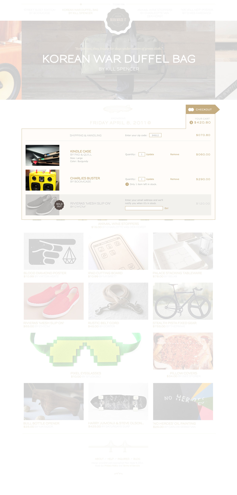
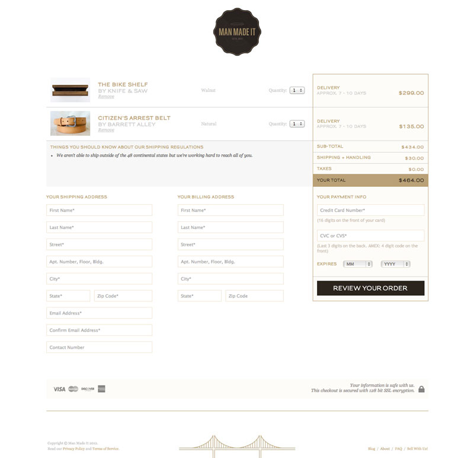
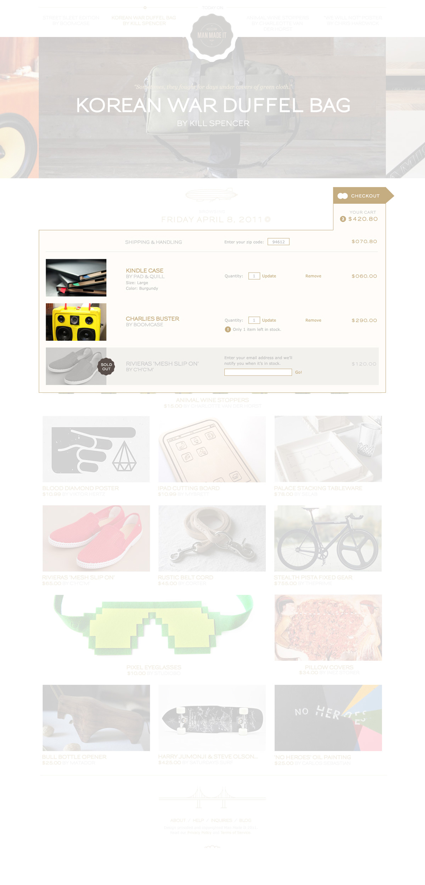
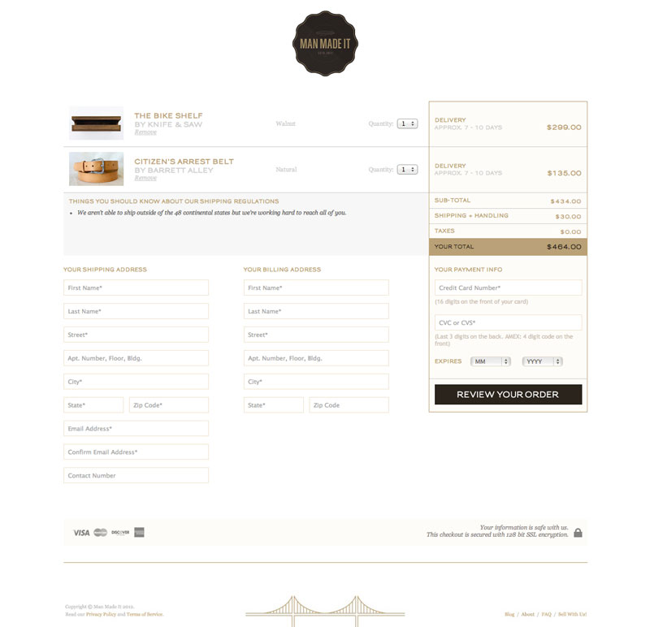

Niraj Patil
Man Made It has a vision. The San Francisco-based online retail store is building a library of stories; ones rich in ideation, creation and process; stories that can be shared with maker communities, hobbyists, ponderers and buyers around the world. Man Made It sells unique, hand-crafted products born out of studios, workshops and garages of these talented, independant makers.
We developed a unique platform that gave makers both publishing and store capabilities to tell some really rich stories about their lives, products and process, and ultimately present a more compelling view of their products for purchase. I led all design initiatives at Man Made It, beginning with branding and messaging. After establishing a language for use across the site and various mediums, I designed numerous site modules, interactions and functions. While designing the site, I worked with Man Made It's co-founder and lead developer to bring my work to life. Man Made It is set to launch mid-2013.


 


